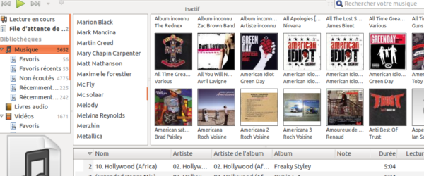

Alors qu'il sera remplacé par Rhythmbox comme lecteur musical par défaut sur Ubuntu 12.04, la dernière release de Banshee, version 2.4, vient de sortir.
Au programme : des corrections de bugs, mais aussi de nouvelles fonctionnalités, comme le support des DVD, la gestion de plateformes musicales en ligne comme Amazon, la synchro des playlists iPod/iPhone, Android....
Bref, c'est pour moi le lecteur multimédia le plus complet pour Linux.
Pour le mettre à jour, il suffit juste de rajouter le PPA des développeurs :
sudo add-apt-repository ppa:banshee-team/ppa && sudo apt-get update && sudo apt-get install banshee
Enjoy ;)